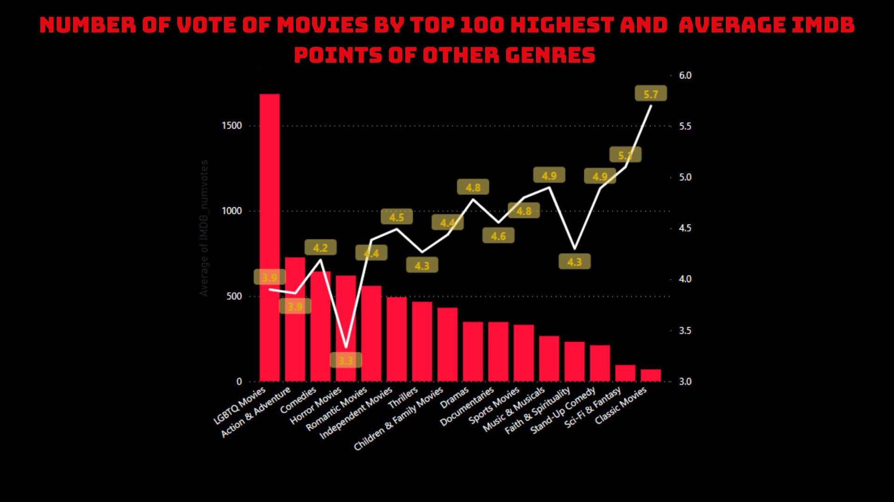

Netflix Project
Project
This project, the data is about Netflix Movies and TV Series, in which I have used libraries like panda, numpy and PowerBi that I got to learn from my course of Coursera. In this project I will explore number of Netflix movie titles which are either Movie or TV Show, most titles come under which rating, most Movie/ TV Show titles are given which rating and which country had most releases. . I will write code to import the data and answer interesting questions about it by computing descriptive statistics.
Motivation
During my investigation into how to find an insight for the business . I am remembered the Netflix, which was popular all around the world, so i decide to analyze and find the insight for Netflix as an Data Analyst at Netflix.
Dataset
I’m using two different dataset from IMDB. Also the dataset is provided by Kaggle, click here for more information. I’m attempting to display the kind of movies or television episodes that Netflix creates and the nations where it makes investments using this dataset. I sincerely hope you will like the visuals I have supplied. The name of the Dataset used for this projects is netflix_titles.csv, title.rating.tsv and title.basics.tsv. There are 6234 rows in the netflix_tiltes.csv file each row containing data about a Movie/TV show, in title.basics.tsv and title.rating.tsv containing data about the title and the number of vote and rating score for each Movie and TV show.
Technology
For this investigation, Python 3 and PowerBI was employed. The following are the libraries and packages I used for my project:
- Numpy (because np is one of the most well-known Python packages for working with arrays).
- Pandas (is widely used in data analysis and dataframe creation).
- PowerQuerry ( is greatly used in analysis of data and making dataframe).
Phases of the project
Data exploration:
After reading the data I have to explore it, its columns, and the info it contains. So, I’ve gained information about:
- The dataset size.
- The datatypes of the columns.
- What each column represents.
- What are the information inside the categorized columns such as type, listed_in, rating and country.
Data Cleaning:
After exploring the data, I need to check it if there are any issues.
-
Using Python
I am using Python and pandas to merging two dataset from IMDB to find the numVotes and rating points by the primary key is tcons

Searching for nulls: I am using dropna function to drop the null values of netflix_title.csv make the dataset clearly. Also change the datatype of the release year to integer.
Changing datatype and fix the column name: Like the step upper changing the type of the startyear of the IMDB dataset after merging together and using str.lower() function to change the name of column.
Calculate the average rating: Because one movie can have multiple year of reviews. So, we have to average it.

GroupBy: The groupby function allows us to group the data based on a specific column, in this case, the ‘primaryTitle_low’ column. By grouping the data, we can treat each group independently and apply aggregate functions on them separately

Final merging and exporting dataset: After ETL the data I am merging them together and exporting the final dataset.

The initial genre chart had an issue of having multiple genres within a single row, which will affect the analysis and charting process later on.

So I decided to create a new dimension called “dim genre” which includes the “genre” column and the primary key is “show_id”. Then, split the genre and unpivot it (to avoid missing values when charting). Finally, remove any null values.
Next, we need to remove duplicate show_ids in the main table so that each key represents a unique value. I will add 4 ranking columns:
- A column to calculate rank based on imdb_rating.
- A column to calculate rank based on numvote (numvote here is the AVG numvote per year for movies).
- A column to match the previous two columns by calculating their average.
- A column to assign the official ranking based on the average column (this will be used to determine the top 100 movies). We will discuss the purpose of the top 100 later.
However, we need to separate the movies and TV shows into two separate tables in order to rank them according to their respective ranks. We can do this by following these steps:
- Duplicate the original table.
- Remove the TV show records from one of the tables.
- Then, I will create a measure called “Duration_year” to calculate the number of years the movie has been released using the formula: 2021 – [release_year].
- Then, I will create an additional measure called “Average_vote_movies” with the formula, which is used to calculate the average number of votes per year using the formula : SUM(‘Movies'[IMDB_numvotes]) / (SUM(‘Movies'[Duration_year])).
Here is the formula to calculate ranking of the Movie:
- One column will be used to calculate rank based on the “Average_vote_movies” measure with the following formula: Rank_vote = RANKX(ALL(‘Movies’),[Average_vote_movies]).
- One column will be used to calculate rank based on the “IMDB_rating” with the following formula: Rank_rating = RANKX(ALL(‘Movies’), [IMDB_rating]).
- One column will be used to match by calculating the average of the above two columns with the following formula: AVG_Rank = ([Rank] + [Rank_rating])/2.
- One column will be used to determine the official ranking based on the average column (the ranking of this column will be used to select the top 50): Rank_Movie/TV_Show = RANKX(ALL(‘Movies’), [AVG_Rank], , ASC) -1.

For splitting the TV show table, the steps will be similar to the ones mentioned above, but with one difference. The vote count (imdb_numvote) will not be calculated based on the year like in movies. Instead, it will be calculated based on the season. This means that a TV show can have multiple seasons, so dividing it by season would be more appropriate compared to dividing it by year.
We will convert it to a numerical format for division by replacing the values “Season” and “Seasons” with a space, then convert it to a number format, and the result will be as follows:

After replacing and converting the format, I will create an additional measure called AVG_numvote by season with the following formula: AVG_numvote theo season = SUM(‘TV Shows'[IMDB_numvotes]) / (SUM(‘TV Shows'[duration])).
Next perform the remaining steps similar to the movie table: Rank = RANKX(ALL(‘TV Shows’),[AVG_numvote theo season]).
-
Target customers: Based on the dataset, we can easily see that the target customer segment for Netflix comprises nearly 50% of adults who have the ability to pay a monthly fee for Netflix. This indicates that Netflix may not be the most suitable platform for children.

-
The majority genre is Drama.


-
The top countries producing the most movies/TV shows is US.
-
Dramas and Comedies dominate in terms of quantity, but have average ratings at a satisfactory level. The most developing genres are classic movies, sci-fi & fantasy. However, horror movies are not performing well.
-
TV dramas and TV comedies have a high quantity, with average ratings better than the movies segment. The most developing genres are classic & cult TV, sci-fi & fantasy, and action and adventure. However, TV horror, kids TV, and reality TV are not performing well.

-
Top 100 highest movies.

-
From the chart below, we can see that genres like Cult movies, Action & Adventure, Sci-fi & Fantasy, and Classic movies have been the most popular genres since 2021. These genres are known for engaging viewers with their content and visuals. Therefore, based on the chart, we can see that Netflix continues to develop and target these genres to attract viewers.
-
Top 100 lowest movies.

-
It is easy to see that LGBTQ occupies 1500 votes for dislikes and also has the lowest score. Therefore, Netflix should consider removing this genre from their film library or focus on developing it, for example, in terms of content and quality of films in this genre to attract more viewers.
-
Top 100 highest TV shows.

-
From the chart below, TV Thrillers, Crime TV shows, and TV Horror have a high number of votes but a low score compared to genres like Science and Nature TV, which have fewer votes but typically rank highest because of their compelling content and ability to attract viewers who want to learn about the world and science. Conversely, TV Thrillers, Crime TV shows, and TV Horror have relatively high scores compared to lower-ranking genres but fall short compared to top-ranking genres. These types of TV shows may have become stale and not attracted new viewers or presented fresh developments to make them more intriguing.

-
Top 100 highest TV shows.

Netflix Should focus more on what ?
The data shows that TV shows have seen a rising trend in appearance rates, with significant percentage increases compared to movies. Netflix seems to be prioritizing TV shows over movies in its content additions from 2015 to 2021. The higher growth and positive audience engagement for TV shows suggest a growing demand for them. TV shows also exhibit higher average vote counts, indicating stronger viewer participation. This trend implies that investing in TV shows could lead to long-term benefits and help Netflix shape a quality content portfolio. Thus, it reinforces the argument for Netflix to focus more on TV shows to capitalize on their growth potential and audience appeal.
However, movies and TV shows outside the top 100 show limited success. To optimize content and resources, Netflix should consider focusing on high-potential content. By maintaining successful TV shows and selecting promising content, Netflix will remain a leader in the entertainment industry.